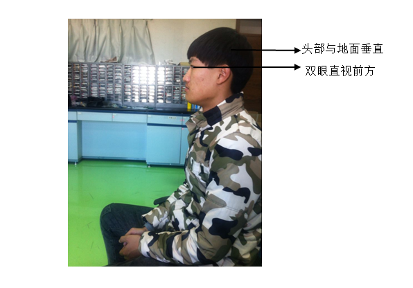

一、使用步骤
1.打开手机软件后，首先进入用户登录界面。可以选择体验软件也可以进行注册/登录。
2.点击注册按键进入用户注册页面。
3.注册后可以通过用户名和密码进行登录，跳转到上传诊断信息界面。
4.通过点击图片跳转到拍摄页面，拍摄需微暗环境，受检者和拍摄者需距离1米左右。
5.照片拍摄后，通过点击上传按钮进行图像上传。
二、使用要求
1.拍摄环境要求
拍摄条件：微暗室，保证受检者面部亮度均匀 照相距离：拍摄者与被拍摄者距离约为1米左右，使两眼刚好同时出现在手机拍摄框内。照相角度：受检者的鼻子须在手机中间，两眼需在手机水平中线上
照相方式：水平持手机（横拍）和垂直持手机（竖排）分别进行拍摄
2.对受检者的要求
视线位置：视线须越过拍摄者耳部或头顶看向远处 头部要求：面部与地面垂直，两只眼在同一水平线上，不能侧头、低头、仰头等。 眼部要求：尽量睁大双眼，闪光灯亮起后不能眨眼。 三、正确照片